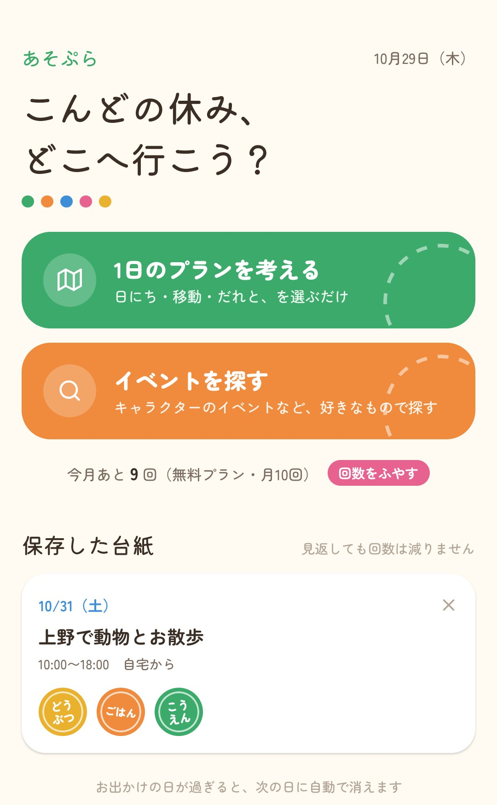
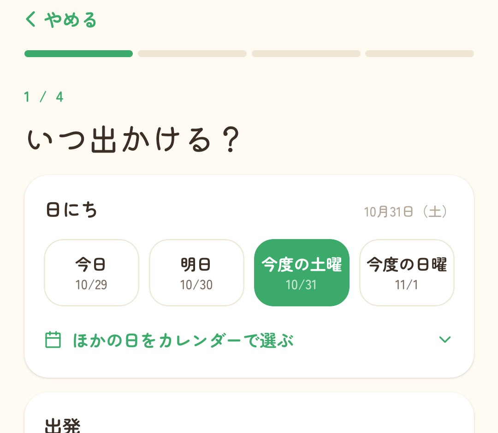
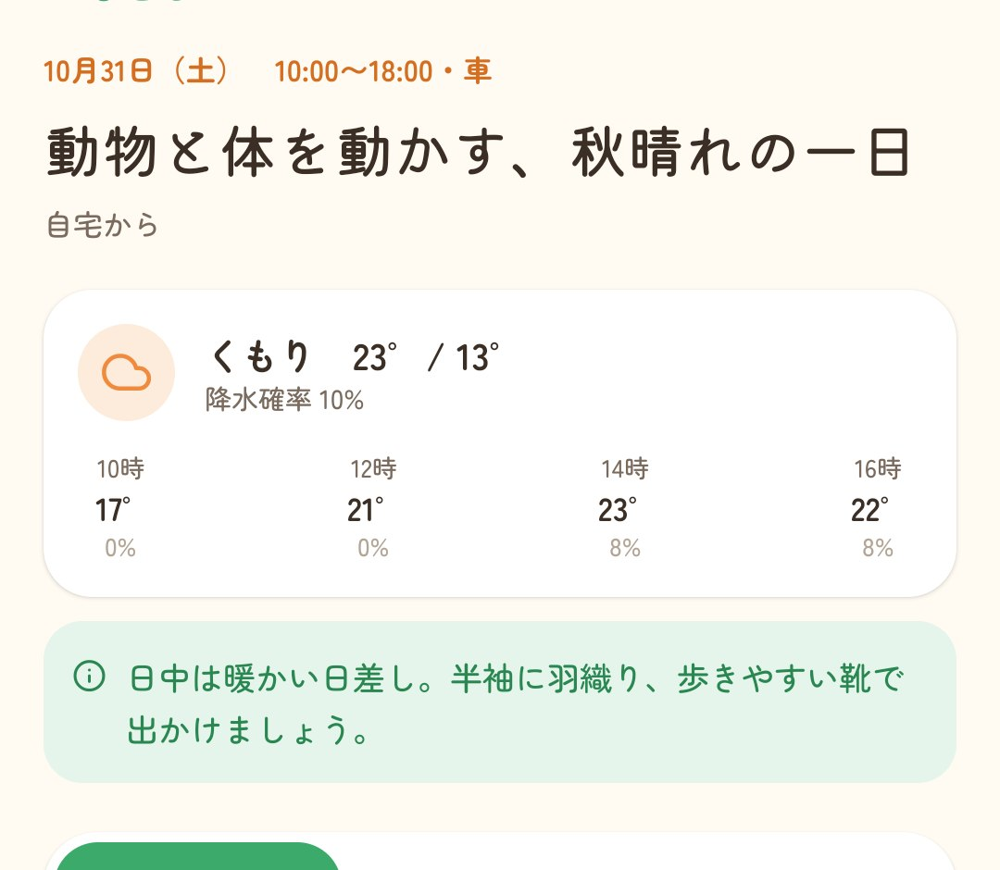
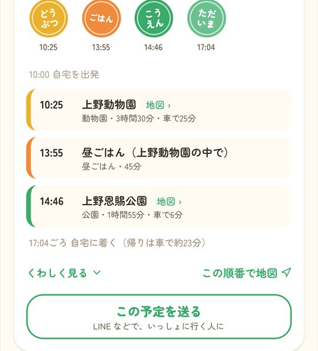
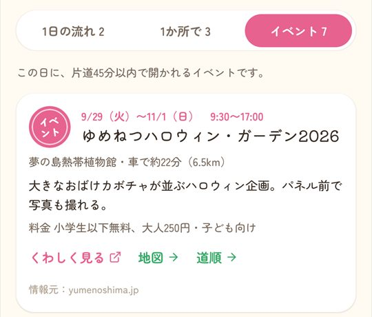

日にち・移動手段・だれと行くか。
選ぶだけで、AI が1日のお出かけプランを作ります。
天気もイベントも、帰りの時間まで考えて。
ダウンロード無料。会員登録もいりません。週末・休日の子連れや家族のお出かけに。

考えるのは、あそぷらにまかせてください。
週末、子どもとどこへ行こう。毎回同じ公園になっちゃう…
あそぷら行ける範囲で、子どもの年齢に合う場所を組み合わせます。お昼ごはんの時間も入れておきますね。
土曜は雨の予報。外遊びは無理かな…
あそぷら天気を見て、屋内で楽しめる場所を中心に考えます。
うちの子、恐竜が大好きなんです
あそぷら「恐竜」で、その日に開かれるイベントを探します。少し遠くても「ここにあるよ」とお知らせします。
ホームの「1日のプランを考える」から。
いつ・どこから・だれと・どんな気分か。
タップで選ぶだけです。
1分ほどで完成。
行き方は地図アプリで確認できます。
10月31日（土）、車で出かける場合の例です。
あそぷらが実際に作ったプランから。行き先と時刻、移動の時間、家に着く時刻まで、ひとつの流れで見られます。

「今度の土曜」「車で片道45分」「子ども2人と」のように、選択肢から選ぶだけで条件がそろいます。自宅を登録しておけば、出発地を毎回入れる必要もありません。
自宅の場所は端末の中だけに保存します。


できたプランは LINE などで家族や友だちに送れます。
作ったプランはスタンプの台紙として残り、何度見返しても回数は減りません。

お出かけの日に開かれるイベントを探して、プランに入れます。好きなキャラクターや趣味で探すこともできます。
イベント情報は AI がウェブの情報をまとめたものです。日時・料金はかならず情報元でご確認ください。
プレミアムプランは自動更新のサブスクリプションです。期間終了の24時間前までに解約しない限り自動で更新されます。解約は App Store・Google Play のサブスクリプション設定から行えます。
いりません。アプリを入れてすぐに使えます。
許可しなくても使えます。その場合は、出発地に駅名（例：大宮駅）などを入力してください。
日本国内でお使いいただけます。スポット情報は Google マップのデータを使っています。
条件を選んでから、1分ほどでプランが表示されます。
iPhone は「設定」→ ご自分の名前 →「サブスクリプション」、Android は Google Play の「お支払いと定期購入」→「定期購入」から解約できます。
サポートページからご連絡ください。